Inverse Kinematics (IK) For Beginners
Overview
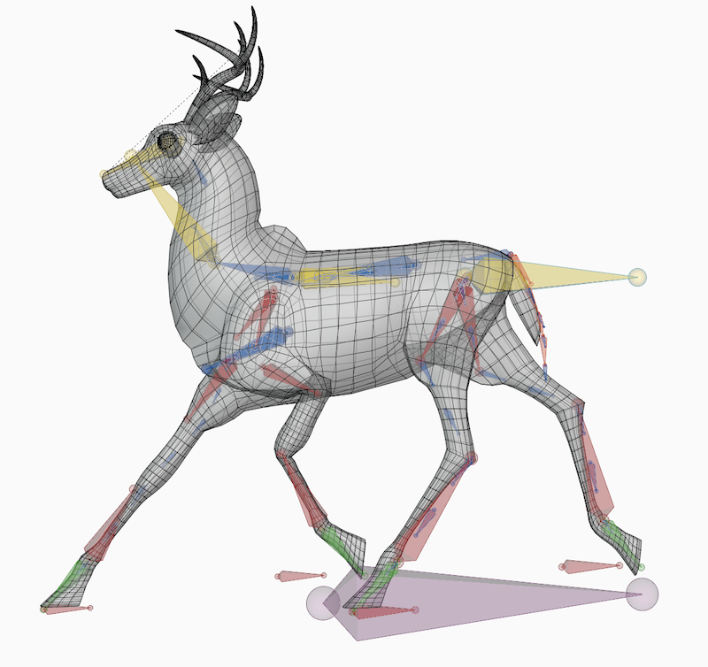In 3D animation, an armature is a virtual skeleton that puppets a character by deforming its geometry. An Inverse Kinematics (IK) solver is an algorithm that helps us pose an armature. Posing is placing a character's limbs and body into a certain position, like standing or sitting.
Before delving into how IK works, you first need to understand the kinematics of an armature. Kinematics is how objects move irrespective of mass or external forces.
Armature Kinematics
An armature is made of connected bones. Each bone is fixed in place by its root and rotates within a sphere of motion.
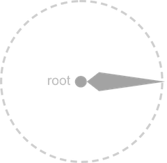Bones are connected by their roots to form joints. The root of the first bone is the root of the armature. The tip of the last bone that interacts with the environment is the end effector.
Connected bones form a hierarchy where a parent (p) bone controls a child (c) bone.
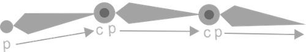
Here's the same armature in motion. The circles of rotation get bigger as we move up the parent-child hierarchy. The first bone rotates the entire armature while the last bone only rotates itself.
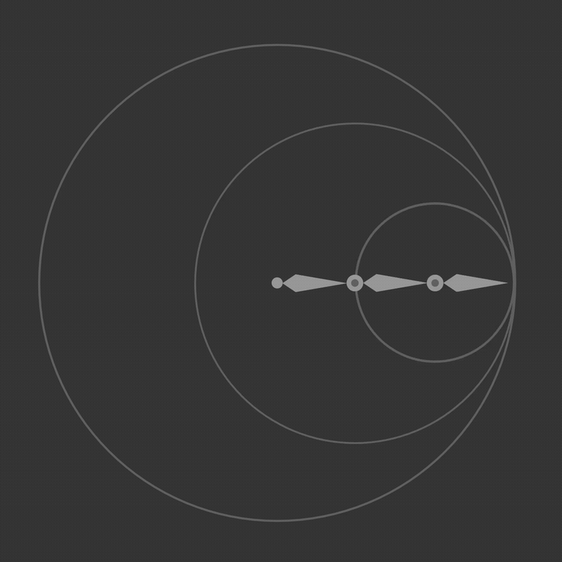Forward and Inverse Kinematics
There are 2 ways to pose an armature:
Forward Kinematics (FK): We rotate each bone separately to position the end effector.
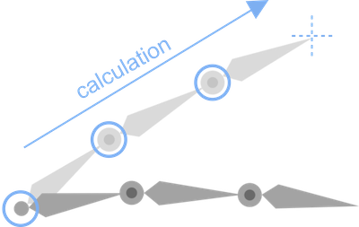 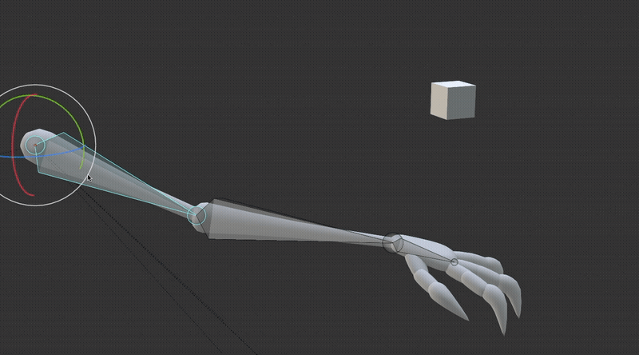Inverse Kinematics (IK): We position the end effector while an IK solver rotates every bone simultaneously. This is convenient for animation since we usually think in locations rather than rotations.
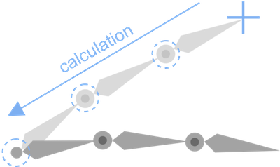 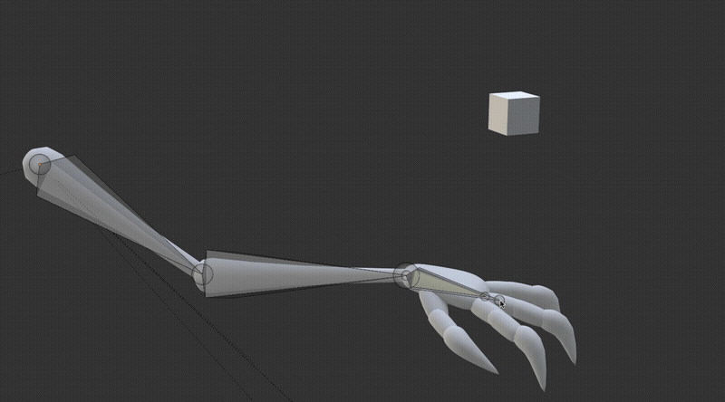IK is the inverse of FK, hence the name. They can be represented as functions (EF = end effector):
| input | output | function | |
|---|---|---|---|
| FK | bone rotations | EF location | EF_location(bone_rotations) |
| IK | EF location | bone rotations | bone_rotations(EF_location) |
In Blender, IK is applied to one bone, the IK bone. This is the bone that we want to move around. From here, the IK solver works backwards up the hierarchy. All of the bones that an IK solver manipulates is the IK chain.
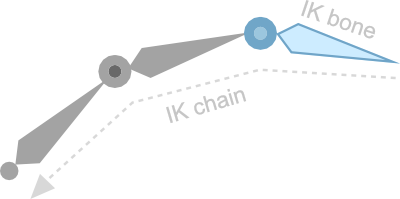Controllers
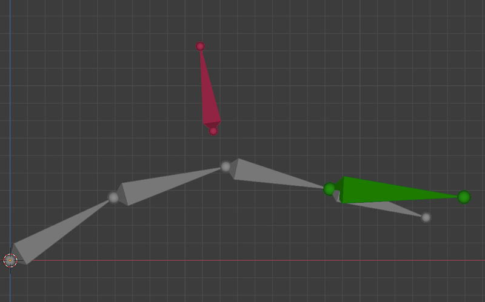We can't manipulate an IK chain directly, so we use controllers. A controller is a bone detached from the armature and doesn't affect the character's geometry. We can move it around to pose an IK chain. Sometimes controllers are represented as different shapes.
Controllers are reference points for an IK solver. In Blender, there are 2 kinds of controllers: targets and poles.
Consider the IK function again:
bone_rotations(EF_location)
An IK solver needs the location of the end effector to calculate how to rotate the other bones. It points to a target that floats over the end effector and uses its location for IK calculations.
Despite its convenience, IK has one problem: There are multiple solutions to place an end effector in the same spot. When moving a hand or a foot, IK doesn't know how we want the elbow or knee to turn.
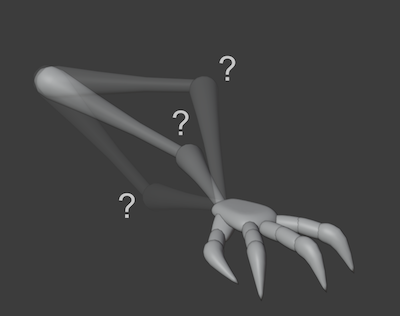While a target is placed at an end effector of an IK bone, a pole is placed over the root. This controller manipulates the roll of an IK chain.
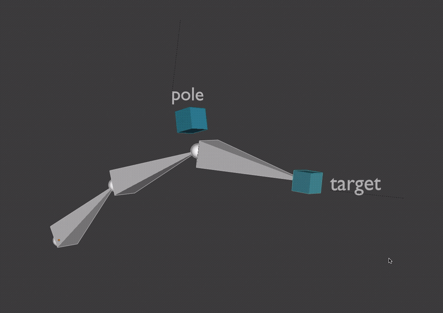Summary
An armature is a virtual skeleton that controls a 3D character. An armature moves based on the hierarchical connections of its bones. The tip of an armature that interacts with its environment is the end effector.
Forward Kinematics (FK) is moving each bone separately to position the end effector. An Inverse Kinematics (IK) solver is an algorithm that rotates armature bones whenever we move the end effector. An IK chain is all of the bones that an IK solver rotates.
A controller is a detached bone that we use to indirectly manipulate an IK chain. A target is a controller that positions an end effector, like a hand. A pole is a controller that controls the roll of an IK chain, like an elbow.